Practice Log n Share
2026年9月
概覽
練習時輕點一下就能記錄，上課時直接把同一個畫面展示給老師。為了自己的薩克斯風學習，我規劃並設計了這款 iPhone App，並與 AI 協作完成開發。


- 角色
- 規劃、UX/UI 設計、開發（與 Claude Code、Codex 協作）
- 期間
- 2026年9月
- 技術
- React · TypeScript; Swift (WKWebView, Live Activity, StoreKit, iCloud)
試用網頁示範版（收錄截至2026年9月20日的本人練習紀錄）
起點——面對「最近練得怎麼樣？」，我答不上來
每兩週上一次課，即使回答「主要練音階」，也無法說明具體練了什麼、練了多久。薩克斯風掛在脖子上時很難寫紙本日誌，而試過的計時 App 都是供自己回顧紀錄的工具。

記錄——手持樂器，輕點一下
練習時只需操作分類卡片。輕點開始計時，點另一張切換，再點同一張停止。
- 1 累積
- 至今的練習。開啟 App 最先看到的內容。
- 2 今日
- 練習順序與時間分配。滿一小時填滿。
- 3 計時中
- 僅此卡片變亮，並以白色外框標示。
- 4 卡片
- 輕點切換。突出顯示今日時數。
一天——填滿的進度條，始終保持填滿
今日進度條在一小時處填滿。超過一小時後，以當下總時數作為右端，避免已經填滿的長條再次出現空白。
今日練習 — 1小時05分鐘
採用
未採用
累積——從第一天起，全部看得見
以綠色深淺表示練習日，以紅框標記上課日期，水平捲動可追溯到開始記錄的那一天。比起減輕繪製負擔，我更重視能夠查看多年的練習。

分享——課程開始時，一個畫面就能說明
把上次上課至今的練習彙整為各分類總時數與每日明細，直接展示給老師。每日表格即使縮小文字，也要在一個畫面內放下所有分類，免去水平捲動。

演變——讓卡片成為練習的操作面板
根據與 AI 對話整理出的規格文件建構畫面，反覆親自操作並修改。先在早期網頁版中探索記錄與分享的形式，再實作為 iPhone App。

9月9日
初版

9月21日
網頁版
9月24日
iOS 1.0
- 名稱與時數放在一起
- 在卡片上突出顯示今日時數，將練了什麼與練了多久連結起來。
- 當前狀態，一目了然
- 只讓計時中的卡片變亮，其餘卡片調暗。
- 操作範圍留在畫面內
- 讓捲動停在整排卡片能完整顯示於畫面內的位置。
開發後期，反覆進行了約15輪流程：Claude Code 提出潛在問題，Codex 驗證並修正，由我決定是否採納。
手感——如何停下來，親手試過再選
僅靠文字要求，無法做出「流暢移動、俐落停穩」的手感。我與 AI 開發了可即時切換方式與數值的調整工具，在實機上比較五種方式後，選擇了瀏覽器原生的捲動吸附。
隆起曲線型

落點預測型

瀏覽器原生 proximity
採用

瀏覽器原生 mandatory

無吸附


作為產品——練習之外
外觀隨裝置設定切換。練習紀錄儲存在裝置內，並自動備份至 iCloud。

實際使用——下一個問題是，記錄要細到什麼程度
每天早晨練習時使用，並在課上向老師展示畫面後，得到的回饋是練習內容一目了然，如果連音階種類也能記錄就更有幫助（大意）。我正在考慮在分類下再加一層，在保持便利的同時記錄更多細節。
資料
網頁示範版可體驗記錄與分享功能。收錄截至2026年9月20日的本人練習紀錄，操作結果僅儲存在目前使用的瀏覽器中。